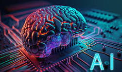

Latest Advancements in AI Technology
Artificial Intelligence (AI) has witnessed extraordinary growth, with groundbreaking innovations in various domains such as natural language processing, machine learning, robotics, and computer vision. These advancements are shaping the future by revolutionizing industries, improving everyday life, and addressing challenges once thought unsolvable.
Breakthroughs in Natural Language Processing (NLP)
NLP technologies like ChatGPT and Copilot are capable of understanding, generating, and translating human language with astonishing accuracy. These tools are widely applied in areas such as customer service, content creation, and education. AI-powered chatbots enhance user experiences by providing 24/7 assistance and tailored solutions.
Advancements in Machine Learning and Data Analytics
Machine learning algorithms have become more robust, allowing systems to analyze vast datasets and extract actionable insights. These advancements are crucial in industries like healthcare, where AI aids in disease diagnosis, personalized treatment plans, and drug discovery. For instance, predictive models are transforming cancer detection and treatment approaches.
Robotics Redefining Automation
AI-driven robotics is revolutionizing automation in manufacturing, logistics, and even surgery. Collaborative robots (or cobots) are working alongside humans, increasing productivity and workplace safety. Autonomous drones and delivery robots are becoming common in logistics, further optimizing last-mile delivery solutions.
Ethics and Responsible AI Development
While AI brings numerous benefits, it also raises important ethical considerations. Issues such as bias in AI algorithms, data privacy, and the potential misuse of AI are being actively debated. Researchers and policymakers are working to establish ethical guidelines and ensure responsible AI development.
Future Prospects
The future of AI is promising, with ongoing research into areas like general AI, which aspires to replicate human-level intelligence. Innovations in hardware, like quantum computing, are expected to further accelerate AI capabilities. As AI continues to evolve, its potential to address global challenges—such as climate change, food security, and healthcare accessibility—is immense.
In conclusion, the rapid advancements in AI technology demonstrate its transformative power across diverse domains. By embracing AI responsibly, we can unlock unprecedented opportunities while navigating potential risks.